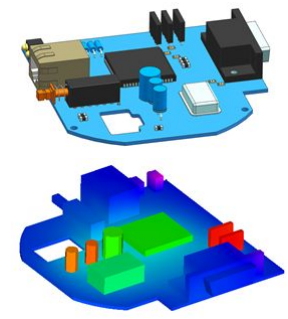
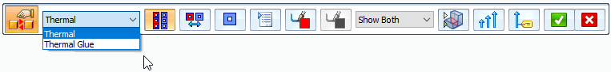

Thermal connectors
Thermal connectors conduct heat between faces and surfaces where there is no physical mechanism in the assembly model to do so. You can use thermal connectors to:
-
Identify a path through which heat may flow.
-
Define thermal resistance between insulated faces and surfaces.
-
Specify conductance between elements that are not connected or aligned.
-
Model conductance between parallel surfaces or edges, without explicitly modeling the heat transfer medium between them (for example, bolted joints, welds, and pins).
When to use thermal connectors
When your model contains connections that are geometrically complex, but thermally simple, you can model the connections using thermal connectors. For example, you can use thermal connectors:
-
For bolted connections and chips placed on a circuit board.

-
For portions of your model for which you do not want to simulate 3D heat conduction.
-
To model thermal resistance of materials in sandwich constructions, for example, in heated glass, panels, and windshields with deicing and defogging capabilities.
-
To model heat absorption by rivets or bolted connections.
-
To model thermal conduction through solar panels and thermal resistance of multilayer insulation.
Eligible thermal studies
Thermal connectors are available for the following types of thermal studies. For the coupled studies listed below, you can apply a thermal connector to the thermal analysis, and a glue or no penetration connector to the linear static analysis.
-
Steady State Heat Transfer
-
Transient Heat Transfer
-
Steady State Heat Transfer + Linear Static
-
Steady State Heat Transfer + Linear Buckling
Adding thermal connectors
You can add thermal connectors to an assembly model:
-
When defining a new thermal study, create thermal connectors automatically using the Connector Options section in the Create Study dialog box:

-
After the initial study creation, when using the following commands in the Connectors group:
-
Auto command

-
Manual command


-
Selecting a thermal connector type
You can choose either of the following thermal connector types for thermal studies:
-
Thermal—Use a Thermal connector to conduct heat between faces and surfaces. For example, you can simulate thermal resistance in thermal insulation applications. With this type of connector, you can define a Thermal conductance value in the Assembly Connector Properties dialog box.
Note:The Thermal conductance value is based on the contact resistance between the faces (such as steel to copper) and the surface finish (for example, shiny or dull). The lower the value, the higher the resistance.
-
Good conductor materials include copper, silver, iron, and steel.
-
Poor conductor materials (insulators) include wood, paper, Styrofoam, and air.
-
-
Thermal Glue—Use a Thermal Glue connector to conduct heat between two bodies. A thermal glue connector provides a stiff connection like a glue connector.
A thermal coupled study requires a thermal connector and one of these structural connectors:
-
Glue
-
No Penetration
Both types of connectors are available in the Connector Type list on the command bar when you use the Auto command or the Manual command. You can apply a thermal connector followed by a structural connector, or use the opposite order.
If you use the Auto command to define connectors for a thermal coupled study, you must select the command twice. Select it once to define thermal connectors for the thermal analysis, and select it again to define structural connectors for the linear static analysis.

How do I
Create connectors based on assembly relationshipsCreate assembly connectors using the Auto command
Create manual connections between faces or surfaces
Replace target and source connection regions
Change connector region direction
Learn more
Assembly connectorsTarget and source connector regions
Assembly connector handles, labels, and symbols
Glue and no penetration contact connectors
Look up more details
Auto command barAssembly Connector command bar
Assembly Connector Properties dialog box